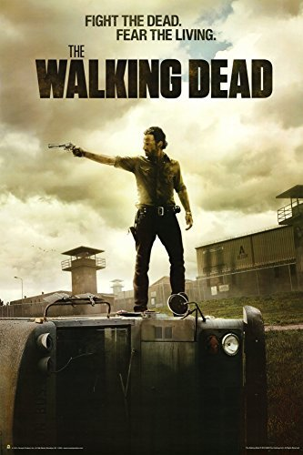

Andrey Spies
Programmer @Le Wagon
Here i'm just typing something that doens't matter for now.
See for yourselfMy Favorite Movies and Series
Fast and FuriousDominic Toretto (Vin Diesel) enjoys the adrenaline of street car racing and his fans treat him like a rock star. After a blazing encounter with the ruthless Johnny Tran, Dom decides to take Brian (Paul Walker), a newcomer to street racing, under his wing. |
|
 |
How I Met Your MotherThe story is set in New York City. It is about a man named Ted Mosby who tells his son and daughter how he met their mother. |
|  |
The Walking DeadThe Walking Dead is an American post-apocalyptic horror television series developed by Frank Darabont for AMC that is based on the comic book series by Robert Kirkman, Tony Moore, and Charlie Adlard |
About this page
This page has been coded during the FullStack program @LeWagon. That was problably the best experience of my entyre life.